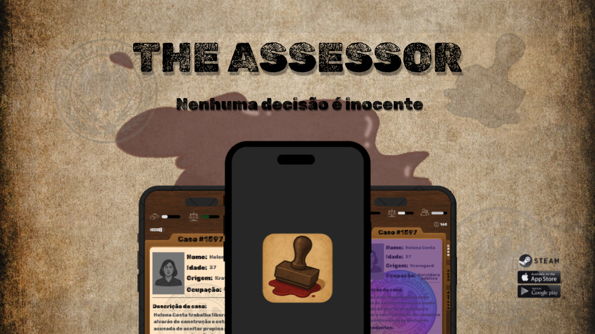

@DNasWill
The Assessor

The Assessor é um jogo autoral inspirado em experiências como Papers, Please e Death and Taxes. O jogador assume o papel de um juiz no tribunal de Kravogard, um país fictício ambientado na década de 1960, onde precisa analisar casos, avaliar evidências e decidir sentenças.
Cada caso é criado para ser moralmente ambíguo. As decisões impactam diferentes grupos — máfia, justiça e rebeldes — por meio de um sistema de reputação, criando consequências sociais e narrativas ao longo do jogo.
O projeto foi desenvolvido individualmente, incluindo:
– Estrutura de lógica e regras de julgamento
– Sistema de geração e armazenamento de casos
– Mecânica de carimbo (aprovação e recusa)
– Sistema de reputação com múltiplas facções
– Interface inspirada em documentos oficiais da época